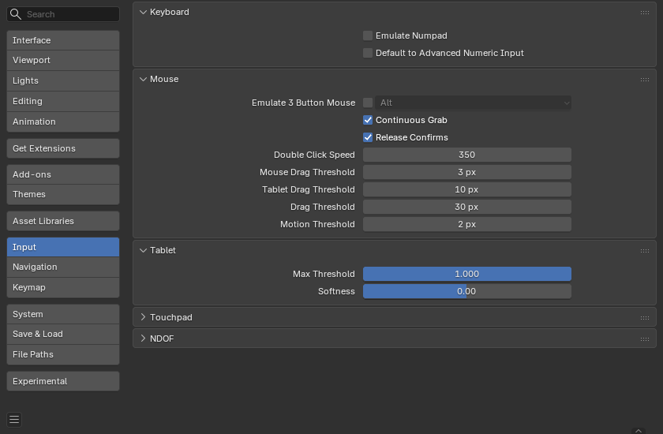

Input¶
Trong phần tùy chỉnh Input, bạn có thể tùy biến cách Blender phản hồi với chuột và bàn phím cũng như định nghĩa keymap riêng của mình.

Keyboard¶
- Emulate Numpad
Phím Numpad được dùng khá thường xuyên trong Blender và không được gán cho cùng hành động với các phím số thông thường. Nếu bạn có bàn phím không có Numpad (ví dụ trên laptop), bạn có thể yêu cầu Blender coi các phím số chuẩn như phím Numpad bằng cách đánh dấu Emulate Numpad.
- Default to Advanced Numeric Input
Trong chế độ biến đổi, mặc định dùng Chế độ nâng cao, nếu không sẽ dùng Chế độ đơn giản.
Mouse¶
- Continuous Grab
Tính năng này dùng để khắc phục vấn đề mà một thao tác như di chuyển object hay pan góc nhìn bị giới hạn bởi rìa màn hình.
Điều này được thực hiện bằng cách chuyển vị (warp) con trỏ chuột trong phạm vi góc nhìn.
Ghi chú
Việc chuyển vị con trỏ chỉ được hỗ trợ bởi các thiết bị nhập tương đối (chuột, trackball, trackpad).
Tuy nhiên, bảng vẽ đồ họa thường dùng định vị tuyệt đối, nên tính năng này bị tắt khi đang dùng bảng vẽ.
Việc này được phát hiện cho từng thao tác, nên sự hiện diện của bảng vẽ sẽ không tắt Continuous Grab đối với đầu vào từ con trỏ chuột.
- Release Confirms
Kéo LMB trên một object sẽ di chuyển nó. Để xác nhận phép biến đổi này (và các phép khác), mặc định cần thêm một cú LMB. Khi tùy chọn này được kích hoạt, việc nhả LMB sẽ đóng vai trò xác nhận phép biến đổi.
- Double Click Speed
Thời gian (mili giây) để kích hoạt một cú nhấp đúp.
- Mouse Drag Threshold
Số pixel mà một phần tử giao diện phải di chuyển trước khi Blender nhận diện; giá trị thấp hơn ngưỡng này sẽ bị coi là sự kiện nhấp.
- Tablet Drag Threshold
Ngưỡng kéo cho các sự kiện của bảng vẽ.
- Drag Threshold
Ngưỡng kéo cho các sự kiện không phải chuột/bảng vẽ (ví dụ bàn phím hoặc NDOF).
Điều này ảnh hưởng đến tùy chỉnh keymap Pie Menu on Drag.
- Motion Threshold
Số pixel mà con trỏ phải di chuyển trước khi chuyển động được ghi nhận. Điều này hữu ích với bút bảng vẽ vốn khó giữ yên hơn nhiều, khi đó ngưỡng này có thể giúp giảm rung giật của vị trí con trỏ.
Ghi chú
Khác với sự phân biệt nhấp/kéo, ngưỡng này dùng để phát hiện các chuyển động nhỏ, ví dụ việc chọn lặp vòng qua các phần tử gần con trỏ. Khi con trỏ di chuyển vượt ngưỡng này, việc chọn ngừng lặp vòng và chọn phần tử gần nhất.
Touchpad¶
Ghi chú
Panel này khả dụng trên Windows, macOS và Linux dùng Wayland.
- Multi-touch Gestures
Dùng các cử chỉ đa điểm để điều hướng bằng touchpad, thay cho mô phỏng con lăn cuộn. Để biết chi tiết hơn về các cử chỉ được hỗ trợ, xem Configuring Peripherals.
- Scroll Direction
Hướng cuộn phản ứng theo các cử chỉ cuộn.
Chỉ khả dụng trên Linux dùng Wayland.
- Traditional:
Cuộn nội dung xuống khi cử chỉ di chuyển lên.
- Natural:
Cuộn nội dung lên khi cử chỉ di chuyển lên.
Tablet¶
- Tablet API (Windows only)
Chọn Windows Ink gốc hoặc hệ thống Wintab cũ hơn cho độ nhạy áp lực. Blender tự động chọn API cho hệ điều hành và bảng vẽ của bạn, tuy nhiên khi gặp vấn đề có thể đặt thủ công. Bạn có thể cần khởi động lại Blender để thay đổi có hiệu lực.
- Max Threshold
Mức áp lực cần thiết để đạt cường độ tối đa.
- Softness
Kiểm soát độ mềm của điểm bắt đầu phản ứng áp lực thấp bằng một đường cong gamma.
NDOF¶
Các tùy chỉnh này điều khiển cách một thiết bị NDOF (chuột 3D) tương tác với 3D Viewport. Chúng cho phép tùy chỉnh việc điều hướng, hành vi xoay quỹ đạo và độ nhạy chuyển động. Chúng cũng có thể được truy cập bằng nút NDOFMenu trên các thiết bị được hỗ trợ, nút này mở một menu pop-up để điều chỉnh trực tiếp trong viewport.
- Lock Horizon
Giữ góc nhìn nằm ngang bằng cách ngăn chân trời bị nghiêng trong khi điều hướng.
- Orbit Center -- Auto
Tự động xác định tâm xoay. Nếu toàn bộ mô hình hiển thị, tâm khối của nó sẽ được dùng. Khi thu phóng vào gần, tâm xoay dịch chuyển sang object hiển thị gần nhất.
- Orbit Center -- Selected Items
Giới hạn tâm xoay quỹ đạo vào tâm của các object hiện được chọn.
- Show -- Orbit Axis
Hiển thị lớp trục (overlay) chỉ hướng xoay quỹ đạo hiện tại.
- Show -- Orbit Center
Hiển thị một điểm đánh dấu chỉ vị trí tâm xoay quỹ đạo hiện tại.
Advanced¶
- Pan Sensitivity
Điều khiển tốc độ pan của góc nhìn tương ứng với đầu vào NDOF.
- Orbit Sensitivity
Điều khiển tốc độ xoay quỹ đạo của góc nhìn tương ứng với đầu vào NDOF.
- Deadzone
Thiết lập ngưỡng tối thiểu cho việc phát hiện chuyển động. Giúp tránh các chuyển động ngoài ý muốn từ những lần chạm nhẹ.
- Zoom Direction
Xác định hướng nào trên chuột 3D sẽ kích hoạt thu phóng.
- Forward/Backward:
Thu phóng bằng cách đẩy hoặc kéo chuột 3D về phía trước/sau.
- Up/Down:
Thu phóng bằng cách đẩy hoặc kéo chuột 3D hướng lên/xuống.
- Invert Pan
Đảo ngược chiều pan trên trục X, Y hoặc Z được chọn.
- Invert Rotate
Đảo ngược hướng xoay trên trục X, Y hoặc Z được chọn.
- Pan / Zoom Camera View
Khi ở trong camera view, sẽ pan hoặc thu phóng camera thay vì thoát khỏi góc nhìn trong lúc xoay quỹ đạo.